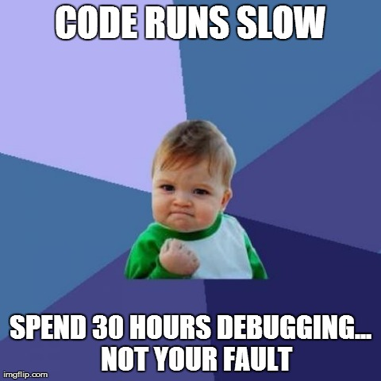

Table of Contents
Debugging
List of pretty funny debugging sessions from Hacker News, includes real-life tron  http://beza1e1.tuxen.de/lore/
http://beza1e1.tuxen.de/lore/
Linux
Ryan recommended Linux Kernel Development by Robert Love as a good intro to the kernel.
- LWN author says it's not perfect and gives some good additional things to study. But really good still. https://lwn.net/Articles/419855/
Simics
- Landslide: CMU Master's student making testing OS's a lot easier with Simics. Overview from Simics interview. Github, which provides links to papers and other stuff.
System Tracing and Profiling
Dan Luu article, references Dick Sites, who wrote XRay, which is getting integrated into LLVM. https://danluu.com/perf-tracing/, https://llvm.org/docs/XRay.html, by Dean Berris.
Intel
Don't settle for anything less than Pin. https://software.intel.com/en-us/articles/pintool/ (instruction level pretty low overhead tracing). There are several extensions that enable reverse debugging and other cool stuff too, documented on the top bar of Pin website.
Has 2 tools, performance counters that are set by hardware (but aren't program specific), and VTune which is another profiler.
Windows
Xperf is helped by UIForETW apparently.
Very Sleepy looks like a nice non-intrusive option to for program-level profiling.
Unix
OS X Instruments supposedly works well crashes. DTrace works much better. I am currently messing with iosnoop to figure out slow bootup. Restarting OS X seems to help a lot!
- No dice on Linux yet. But it runs fast enough for me to not worry about it that much.
- Record nondeterministic execution and then play it back deterministically (reverse debugging)! Firefox RR project and UndoDB, TotalView.
- Or use a virtualized environment??? SO post
- Other tools like valgrind and flame graph (for profiling) stuff recommended
- Helpful profiling tools. Note: HOW PROFILERS LIE. (Intel VTune looks easiest (free for Open Source contributor), then gprof.
- StackOverflow comparison
Common Code Bugs (with suggested fixes)
- UNITS! Are arrays typed, or are they working with bytes? NASA misses one (or several) conversions from US to metric and botches $X00 million mission!
- Why is this “overhead” (for embedded / C guys) not enforced in code or code-hover things?
- Return 0 for success or return 1 for success? I think it all comes down to a few extra characters:
if func()vs.if func() == 0. The best might be catching a thrown and named exception, but there's no space for exceptions in embedded???
Slow File I/O
(use glances in Linux) 
{kind=link}
tldr
In my case, it turned out to be a 3rd party (Viewfinity) IT-managed file driver that is causing massive IO overheads and causing file accesses to slow down over time. Windows Performance Toolkit is awesome. Here's how I figured it out:
- Wrote a test script to reproduce the issue: IOTest.pl
- Observed and plotted effects with Process Explorer. IO Read speed decreases with time and stays low over time, even if accessing cached files in RAM (the second part of the plot where I re-run the script). Plotted with System Information pane (Ctrl+I). Be sure to start with Administrator privileges to get Disk I/O as well as RAM I/O (not shown).
{kind=link}
At this point, it's time to pull out the big guns.
Windows Performance Analysis Toolkit
Install the Windows Performance Toolkit. Also install the Mini-Filter Hotfix to allow you to analyze mini-filters (scripts like anti-virus or encryption tools that have hooks into low-level IO calls in Windows that happen to be invisible to Task Manager / Process Explorer).
Run WPRUI.exe
This is the ideal method. If it's file IO stuff, be sure to enable minifilter analysis underneath Scenario Analysis. It can take up to a minute to get started recording.
However, it wasn't recording minifilter analysis even though I had checked the box… Use xperf below for now 
Run Xperf.exe (command line)
The old way to do it, where you had to know all the flags yourself. This one worked when I ran it to collect minifilter data. (from here)
XPERF -on PROC_THREAD+LOADER+FLT_IO_INIT+FLT_IO+FLT_FASTIO+FLT_IO_FAILURE+FILENAME+FILE_IO+FILE_IO_INIT+DISK_IO+HARD_FAULTS+DPC+INTERRUPT+CSWITCH+PROFILE+DRIVERS+DISPATCHER -stackwalk MiniFilterPreOpInit+MiniFilterPostOpInit+CSWITCH+PROFILE+ThreadCreate+ReadyThread+DiskReadInit+DiskWriteInit+DiskFlushInit+FileCreate+FileCleanup+FileClose+FileRead+FileWrite -BufferSize 1024 -MaxBuffers 1024 -MaxFile 1024 -FileMode Circular
Then run the following to stop collecting data and write it out to a file:
xperf -d mytrace.etl
Then load up wpa.exe to look at your trace file! In my case, I needed to analyze why my file I/O counts was decreasing over time (the graph in the bottom left). I suspected it was something even lower-level, and it sounded like mini-filters were the issue. After opening the mini-filter delays tab and clicking on Show Table and Graph in the top right (1 in the picture), I was able to see that over a 70-second test (perl, python), vfdrv.sys was taking up 800 seconds of time (~50 seconds per core) leaving the remaining 20 seconds for computation or the actual file reading (at least I think this is the case, I could be wrong). vfdrv.sys was the Viewfinity IT administration toolkit, which didn't seem that important.
{kind=link}
Conclusion
Once I disabled vfdrv.sys from loading on boot (by renaming the file), THE COMPUTER WAS AMAZING. I'm waiting to hear back from IT on the bug, I'll post more info here.
The Windows Performance Toolkit is awesome, and I didn't even know it existed until a few days ago. I'm looking forward to using it again in the future.
Sources
An optimization/debugging engineer working at Valve. His blog has excellent posts on this sort of intense Xperf stuff, including a bug with a Western Digital external drive and behind-the-scenes CPU throttling due to heat
IOTest.pl
Set cores to number of cores on your machine.
use POSIX; # Turn on autoflush $|++; $cores = 7; #Number of cores on your machine - 1 $numbersPerFile = 25000; $filesPerFolder = 1000; $totalFolders = 60; $directory = 'C:\IOTest_perl'; if (-d $directory) { $writing = 'F'; } else { mkdir($directory); $writing = 'T'; } sub function { foreach $folder (@_){ $subfolder = $directory . "\\" . $folder; if ($writing eq 'T') { mkdir($subfolder); } print $folder . ' '; for($file = 1; $file < $filesPerFolder; $file++) { $filepath = $subfolder . '\\' . $file . '.txt'; if ($writing eq 'T') { open FILE, ">$filepath" or die $!; $x = $folder*$file; $csv = join(',',($x .. $x + $numbersPerFile)); print FILE $csv; } if ($writing eq 'F') { open (FILE, "<", $filepath) or die $!; while ($line = <FILE>){ chomp $line; $sum = 0; foreach $val (split(',', $line)) { $sum += $val; } # print $sum } } close FILE; } } } @processes = (1 .. $cores); foreach my $core (@processes) { my $pid; next if $pid = fork; # Parent goes to next core die "fork failed: $!" unless defined $pid; # Do child stuff @folders = (); for (my $i = $core-1; $i <= $totalFolders; $i += $cores) { push(@folders,$i); } function(@folders); exit; } while (wait() != -1); print 'All done!';